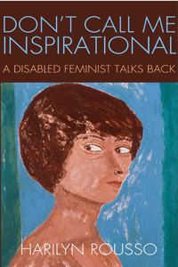

A disabled woman confronts body image, sexuality, bias, discrimination, and condescension as she fashions an independent and fulfilling life
A disabled woman confronts body image, sexuality, bias, discrimination, and condescension as she fashions an independent and fulfilling life


 A disabled woman confronts body image, sexuality, bias, discrimination, and condescension as she fashions an independent and fulfilling life
A disabled woman confronts body image, sexuality, bias, discrimination, and condescension as she fashions an independent and fulfilling life

|  |
Don't Call Me InspirationalA Disabled Feminist Talks BackHarilyn Roussopaper EAN: 978-1-43990-937-9 (ISBN: 1439909377) |
"I've known Harilyn Rousso as a powerful activist and gifted artist, but with this revelatory book, she becomes something even rarer: a storyteller who conveys her uniqueness and so helps us to discover our own. Don't Call Me Inspirational is irresistible to read, honest, insightful, and universal."
—Gloria Steinem
For psychotherapist, painter, feminist, filmmaker, writer, and disability activist Harilyn Rousso, hearing well-intentioned people tell her, "You're so inspirational!" is patronizing, not complimentary.
In her empowering and at times confrontational memoir, Don't Call Me Inspirational, Rousso who has cerebral palsy, describes overcoming the prejudice against disability�not overcoming disability. She addresses the often absurd and ignorant attitudes of strangers, friends, and family.
Rousso also examines her own prejudice toward her disabled body, and portrays the healing effects of intimacy and creativity, as well as her involvement with the disability rights community. She intimately reveals herself with honesty and humor and measures her personal growth as she goes from "passing" to embracing and claiming her disability as a source of pride, positive identity, and rebellion.
A collage of images about her life, rather than a formal portrait, Don't Call Me Inspirational celebrates Rousso's wise, witty, productive, outrageous life, disability and all.
Excerpt available at www.temple.edu/tempress
"Don't Call Me Inspirational reads like a collection of eloquent, timeless letters to the world. Rousso writes to her readers as if she knows each and every one of us and wants to strengthen the bond we share. A disabled woman's life has never been so thoughtfully and beautifully rendered�in fresh, vital prose with candid humor and a vivid imagination."
—Simi Linton, author of My Body Politic and Co-director of the film Invitation to Dance
"Don�t Call Me Inspirational is stunning, a pleasure to read. Rousso�s outstanding book is both a beautifully written memoir about growing up in the 1950s and a critical historical analysis of disability politics. The author moves through her life, diving into gender/sexuality/embodiment/disability politics with grace and honesty. Nothing is simply resolved; rather, it is lived, moved through, engaged, struggled over, and then revisited."
—Michelle Fine, Distinguished Professor of Psychology at the Graduate Center, City University of New York
"An inspirational affirmation of the unique worth of every individual."
—Kirkus Reviews
"Rousso is an activist, artist, educator, social worker, psychotherapist, writer, painter and advocate who has worked in the disability rights field. The book follows her journey from 'passing'�pretending that she didn�t have cerebral palsy�to embracing her disability. In the late �70s, she began exploring her disability identity, and she writes with honesty and power."
—Jewish Woman
"This collection of 52 short essays and meditative fragments is aptly described by the author, a psychotherapist, disabilities activist, and artist, as 'a collage or a series of images' rather than a more formal memoir.... When she writes of the psychotherapy institute where she was training asking her to leave, believing that a person with her disability would 'distress [her] psychotherapy clients, causing them to flee�or at least to ask for another, more "normal" therapist,' she, and her reader, recognize the prejudice she has faced.... [Rousso's] painful honesty is affecting."
—Publishers Weekly
"[E]xtraordinary�. Memoirs succeed when they provide readers with a gut feeling of what the author�s life is like, and Rousso indeed opens the door to her world� [She] writes with intelligence, passion, humor and spunk."
—New York Jewish Week
"Rousso�s story of coming to terms with disability is at once unique and universal.... Rousso�s compelling story is less a memoir of endurance than a fine model for feminist development."
— Ms. Magazine
"This is a book that is full of generative critique, embedded in the story of a life that itself has many lessons to teach. Don�t call it inspirational: call it energizing. It is written in short chapters, with an accessible style that is alternately funny, wry, serious and acerbic."
—Chronicle of Higher Education blog Tenured Radical
"[A] remarkably even-handed account and reflection on a life with cerebral palsy."
—Wordgathering
"Rousso skillfully blends activist autobiography, coming-of-age memoir, disability narrative, short form poetry, and manifesto.... Rousso has created a multifaceted, well-written, and decidedly nontraditional work with Don�t Call Me Inspirational."
—Global Comment
"Rousso uses this collection of brief essays and a few poems to share her beliefs and render her journey from dependent daughter to independent activist.... [P]age by page, she makes the case for herself, to herself�and to other disabled women. 'There is no quick fix for a lifetime of selfhatred,' Rousso writes. 'Only slow healing.'"
—Bust
"[Don't Call Me Inspirational is] so powerfully written that it explodes from within itself, and beyond the issues uncovered in women's studies, disability advocacy and politics there exists a rare exuberance.... I will save you the gory details of my own self-revelations spurred on by [Rousso's] brave vulnerability and leave you with my absolute recommendation to go out and immediately get this book. I promise you, you will learn things about yourself that will make you laugh hysterically, cry openly, and ultimately ... give you permission to embrace yourself for all you are and aspire to be."
—Disability Loop News
"[The] author�s willingness to connect disability bias and sexism, as well as the non-linear essay format refreshing. The lives of people with disabilities rarely fit into a conventional timeline, so the non-chronological approach is a good choice overall. The title is a special gift to women like myself who feel that we get far more credit for continuing to exist than we do for anything we accomplish... Overall, this is a clear and thoughtful set of essays that made me want to read more...It really makes you think."
—Breath & Shadow
"Don�t Call Me Inspirational is many things: a coming of age story, a family memoir, and a collection of beautifully written essays on what disability means for one woman. It is also in-your-face straight talk for everyone who assumes people with disabilities are all the same, all 'less than,' all wishing they were different from the way they are. She shows how the label 'inspirational' is often just one more way of expressing a sense of difference rather than an understanding of equality.... [It is] lively, insightful, and moving reading for both general audiences and scholars."
—Women's Review of Books
"[H]er critiques of her own attitudes are richly textured.... [A] gifted, articulate woman. Her memoir, informative and well-crafted as it is, leaves us with an impression that it is still very complicated for a person with visible disabilities to maintain personal privacy and dignity, yet also freely to enter the world and freely express what she perceives."
—Socialism and Democracy
"Don't Call Me Inspirational is a frank, forthright, and insightful memoir by the feminist disability activist, painter, psychotherapist, and former New York City Human Rights Commissioner Harilyn Rousso.... Overall, the book advances disability activist and scholarly investigations of embodiment, sexuality, and what it means to 'claim disability' personally and collectively.... It is also an invaluable asset to the archives of feminist disability activism.... [Rousso's] writing is simultaneously bold, insightful, and humorous in confronting her own vulnerabilities, insecurities, human failings, and internalized ableism, while using them to map underlying social injustices and the collective remedies needed."
—Disability Studies Quarterly, Vol. 34, No. 1
"I highly recommend [Rousso's] book for the exploration of how a disability...can lead one to feel less than human and limit hope, imagination, and opportunity.... Her individual experiences help elucidate both disabling and enabling processes and can help others appreciate the daily struggles to build identity and maintain dignity in the face of multiple oppressions. Ms. Rousso is an everyday heroine.'"
— Affilia
"Rousso offers a genuine reflection on growing up in a society that struggles to recognize the value of people with disabilities.... She simultaneously grants readers an in-depth analysis of the feminist movement and its relationship with the disability rights movement, while questioning society�s views of sex and sexuality.... Both hilarious and solemn at times, this [memoir] offers an intriguing perspective on our society�s structure and the varying roles of people with disabilities, and I cannot recommend it enough.'"
— Disability Rights Galaxy
"This memoir is one of the most vibrant, refreshing and important explorations of the �lived experience� of being a disabled woman that I have ever read.... Rousso beautifully describes her life experiences and reflections on her time from east to west coast in the USA (Washington to New York and Boston thus far); she has an engaging humour that makes the book pacey enough to read in one sitting or ideal to pick up in different places and re-read over time. Yet, through this accessible contemporary chronicle, she also manages to demonstrate how disability and gender connect and struggle throughout childhood, teenage anxiety, love, body image, identity and womanhood, without becoming angst-ridden, flippant or overly political.... [A]n important volume that will stand the test of time.'"
— Disability & Society
"Rousso's book Don't Call Me Inspirational is part memoir and part verbal collage.... Many of the vignettes...feel more akin to reading a personal journal entry filled with emotion and nuance....Rousso's writing style is accessible to a non-academic audience as it is free of scholarly jargon and allows various topics to be discussed succinctly. Because of this, her book stands as a useful example of how to create a work that is easy to read by a lay audience while still being both theoretically rich and engaging."
—H-Disability
"In Don�t Call Me Inspirational, Harilyn Rousso claims a unique identity. She is a feminist and a disabled woman, but she resists being seen as an inspirational figure simply on account of having cerebral palsy. The book exposes the disabilism that continues to exist in society and has not yet had the same acknowledgement as other prejudicial stereotypes which are, at least rhetorically, now condemned.... The book provides a source of insight into the life of a disabled woman growing up in the period of the establishment of the Disabled People�s Movement."
—Feminism & Psychology
"I�d really recommend this book to any disabled person because it brings a real feeling of reading about someone like me and I liked that. But it�s also a good book for parents or carers of disabled people to read or really anyone at all. As long as they approach it with an open mind."
—A Writer in a Wheelchair
"[E]ngages with both the personal and the political.... Don�t Call Me Inspirational provides the reader with a generously candid narrative of how the author became politicized as a feminist and disability activist.... [T]his memoir offers greater nuance, and could instead be characterized as a behind the scenes look at what it might be like to achieve neoliberal successes while negotiating the social position of disability. Her story, in contrast with the disability memoir trope, may not be as tidy, may instead be more fragmented and fraught, and is certainly not inspirational; but it rings far more honest."
—The Canadian Journal of Disability Studies
Preface
Acknowledgments
I: Close Encounters with the Clueless
1. Who�s Harilyn?
2. Birth, Mine
3. Close Encounters with the Clueless
4. The Beggar and the Cripple
5. The Stare
6. Always the Other
7. Why I am Not Inspirational
8. Home
II: On Leaving Home
9. Wedding Day, 1933
10. Dancing
11. Exploding Beans
12.My Sister
13. Adolescent Conversation
14. On Leaving Home
15. Hideous Shoes
16. Driving High
17. Eli
18. My Father, Myself
19. Driving away from Home
III: On Not Looking in the Mirror
20. Walk Straight!
21. On Not Looking in the Mirror
22. Facing My Face
23. Meditations on Speech and Silence
24. Daring Digits
25. Right-Hand Painting
26. Being Only One: Some Meditations on Solitude
IV: What's a Woman?
27. What�s a Woman?
28. He Was the One
29. Blank Page
30. Buying the Wedding Dress
31. First Date
32. First Night
33. Mixed Couple
34. Sylvester
35. Faces of Eve
36. Tough Bird
37. Hand in Hand
V: Why Claim Disability?
38. Finding My Way
39. Keeping the Distance
40. That �Inspirational� Label
41. Token of Approval
42. Disabled Women�s Community
43. The Story of Betty, Revisited
44. Listening to Myself
45. Activist Sisters
46. Toilet Troubles
47. My Mentoring Project
48. Why Claim Disability?
49. Broken Silences
50. Eulogy for My Nondisabled Self
51. Eulogy for My Freakish Self
52. Ode to My Disabled Self
Harilyn Rousso is a disability activist, feminist, psychotherapist, writer, and painter. She is the President of Disabilities Unlimited Consulting Services, founder of the Networking Project for Disabled Women and Girls, co-editor of Double Jeopardy: Addressing Gender Equity in Special Education and author of Disabled, Female, and Proud!
Biography/Memoir/Autobiography
Disability Studies
Women's Studies
© 2016 Temple University. All Rights Reserved. This page: http://www.temple.edu/tempress/titles/2235_reg.html.